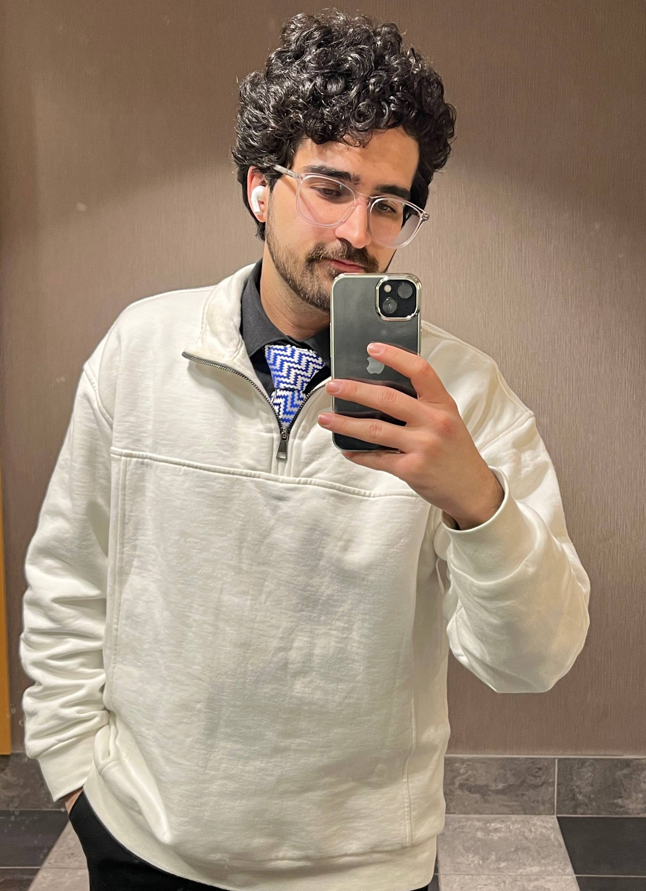

Hello, I'm Amir
I am a Mechanical Engineer (E.I.T) with experience in mechanical design, structural and stress analysis, finite element analysis, fracture and fatigue assessment, risk analysis and doagnostics, and applied data analysis and machine learning.
My work combines simulation, data analysis, and risk assessments across energy, manufacturing, automotive, and research applications.

About Me
I am currently working as Risk Assessment and Diaognistics Engineer at Enbirdge. My academic and professional background focuses on solid mechanics, fracture and fatigue, finite element modeling, risk assessments, and machine learning for engineering applications.
My work includes pipeline integrity analysis, XFEM-based fracture modeling, fatigue life prediction, risk assessments and data analysis.
Research
Structural Integrity, Fracture Mechanics, Risk Assessment, Applied Machine Learning and Data Analysis.
Engineering Work
Mechanical design, stress analysis, failure assessment, testing, and standards-based evaluation.
Tools
Abaqus, ANSYS, SolidWorks, AutoCAD, CATIA, NX, Python, MATLAB.